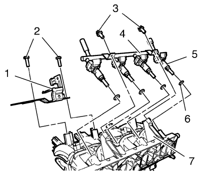

Sustitución del colector de admisión — 1.6L LDE y LXV
Procedimiento de desmontaje
- Abra el capó.
- Retire el conducto de salida del purificador de aire. Consultar Sustitución del conducto de salida del filtro de aire → 1.6L LDE, LXV, 1.8L 2H0 y LUW .
- Elevar el vehículo y soportarlo de manera segura. Consultar Elevación y soporte en alto del vehículo .
- Vacíe el sistema de refrigeración. Consultar Drenaje y llenado del sistema de refrigeración .

- Retire los 2 tornillos (2, 3) de anclaje del colector de admisión.
- Desmonte y desconecte el enchufe del mazo de cables de la sonda Lambda calentada 1.
- Desmonte el anclaje del colector de admisión (1).
- Baje el vehículo a la altura máxima.
- Desconecte el enchufe del mazo de cables.
- Desconecte los tubos de la válvula solenoide de purga del depósito antiimpurezas de emisión de vapores (1).
- Desmonte la válvula solenoide de purga del depósito antiimpurezas de emisión de vapores (1) y el soporte de goma del colector de admisión (2).
- Retire el tubo de ventilación positiva del cárter del cigüeñal. Consultar Sustitución del tubo/tubería/tubo flexible de ventilación positiva del cárter del cigüeñal → 1.6L LDE, LXV y 1.8L 2H0 .
- Desmonte el conjunto del cuerpo de la mariposa. Consultar Sustitución del conjunto del cuerpo de la mariposa → 1.6L LDE, LXV, 1.8L 2H0 y LUW .
- Desconecte el enchufe del mazo de cables del sensor de presión absoluta del colector. Consultar Sustitución del sensor de presión absoluta del colector → 1.8L 2H0 y LUW → 1.6L LDE y LXV .
- Desmonte el mazo de cables del sistema de gestión del motor y el mazo de cables de los inyectores de combustible.

- Desmonte los 2 tornillos del soporte de la válvula solenoide de purga del depósito antiimpurezas de emisión de vapores (2).
- Desmonte el soporte de la válvula solenoide de purga del depósito antiimpurezas de emisión de vapores (1) del colector de admisión (7).
- Desmonte los 2 tornillos del tubo de distribución de inyección de combustible multipuerto (3).
- Extraiga el tubo de distribución de inyección de combustible multipuerto (4) y los inyectores de combustible (5) del colector de admisión (7).
- Desmonte las 4 juntas de los inyectores de combustible multipuerto (6).
- Extraiga el sensor de presión absoluta del colector. Consultar Sustitución del sensor de presión absoluta del colector → 1.8L 2H0 y LUW → 1.6L LDE y LXV .

- Desconecte el tubo de depresión de refuerzo (1) del colector de admisión.
- Retire los 7 tornillos (1) del colector de admisión.
- Desmonte el colector de admisión (2).
Procedimiento de limpieza e inspección
Limpie e inspeccione el colector de admisión. Consultar Limpieza y comprobación del colector de admisión → LDE, LED, LFJ, LXV, 2H0, LUW .
Procedimiento de montaje
- Limpie las superficies de sellado.
- Monte la junta nueva.
Precaución:Consulte Precaución con las fijaciones en la sección Prólogo.
- Monte el colector de admisión (2) y los 7 tornillos del colector de admisión (1), y apriételos a 20 N·m (15 lib. pie).
- Conecte el tubo de depresión de refuerzo (1) en el colector de admisión.
- Monte el sensor de presión absoluta del colector. Consultar Sustitución del sensor de presión absoluta del colector → 1.8L 2H0 y LUW → 1.6L LDE y LXV .
- Monte las 4 juntas de los inyectores de combustible multipuerto (6).
- Monte el tubo de distribución de inyección de combustible multipuerto (4) y los inyectores de combustible (5) del colector de admisión (7).
- Monte los 2 tornillos del tubo de distribución de inyección de combustible multipuerto y apriételos a8 N·m (71 lib. pulg.).
- Monte el soporte de la válvula solenoide de purga del depósito antiimpurezas de emisión de vapores (1) en el colector de admisión (7).
- Monte 2 tornillos de soporte de la válvula solenoide de purga del depósito antiimpurezas de emisión de vapores (2) y apriételos a 8 N·m (71 lib. pulg.).
- Monte el mazo de cables del sistema de gestión del motor.
- Conecte el enchufe del mazo de cables del sensor de presión absoluta del colector. Consultar Sustitución del sensor de presión absoluta del colector → 1.8L 2H0 y LUW → 1.6L LDE y LXV .
- Monte el conjunto del cuerpo de la mariposa. Consultar Sustitución del conjunto del cuerpo de la mariposa → 1.6L LDE, LXV, 1.8L 2H0 y LUW .
- Monte el tubo de ventilación positiva del cárter del cigüeñal. Consultar Sustitución del tubo/tubería/tubo flexible de ventilación positiva del cárter del cigüeñal → 1.6L LDE, LXV y 1.8L 2H0 .
- Monte la válvula solenoide de purga del depósito antiimpurezas de emisión de vapores (1) y el soporte de goma en el colector de admisión (2).
- Conecte los tubos en la válvula solenoide de purga del depósito antiimpurezas de emisión de vapores (1).
- Conecte el enchufe del mazo de cables.
- Elevar el vehículo
- Monte el anclaje del colector de admisión (1).
- Monte y desconecte el enchufe del mazo de cables de la sonda Lambda calentada 1.
- Monte los 2 tornillos del anclaje del colector de admisión (2, 3) y apriételos a 8 N·m (71 lib. pulg.)
- Bajar el vehículo.
- Llene el sistema de refrigeración. Consultar Drenaje y llenado del sistema de refrigeración .
- Monte el conducto de salida del filtro de aire. Consultar Sustitución del conducto de salida del filtro de aire → 1.6L LDE, LXV, 1.8L 2H0 y LUW .
- Cierre el capó.
| © Copyright Chevrolet. All rights reserved |